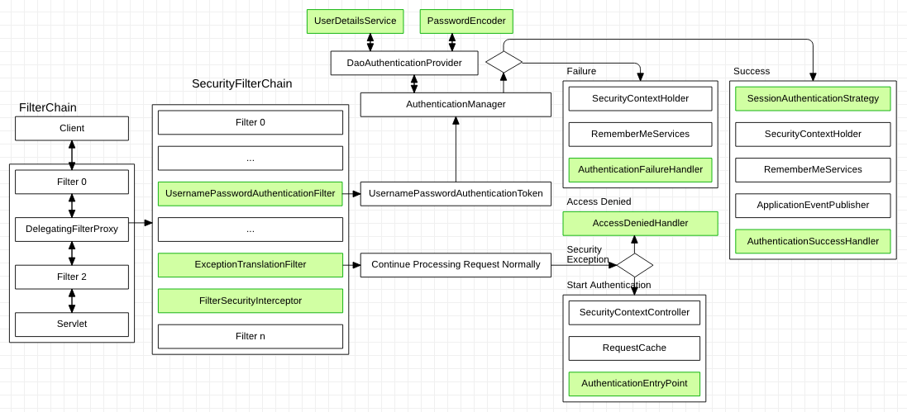

In post of Spring Security: Authentication and authorization for separated backend, I have show you how to use Spring Security to authenticate and authorize for separated backend of web application. With that way, the server side will store sessions for users, and send cookie to front-end. It means the server side saved the state of user.
In this post, I will show you how to implement Stateless authentication and authorization with Spring Security and JWT.
What is JWT
JWT is short for ‘JSON Web Tokens’. It provids a compact, URL-safe way to represent claims when we need transfer them between two parties. It use JSON to encode the claims and make us easy to read/write and produce.
I believe you have find the JWT will not do any things about Authentication, it just encode and decode the claims, then we can transfer it between 2 sides. We need implement the logic to verify the user’s information by ourselves.
Then, why we use it?
First, it has higher safety to a certain extent. It can prevent the token is falsified.
Second, it is self-contained and stateless. we need not store it on server side in most situations.
Third, it is a cross-language solution. If your application is implemented with Microservice model. It could work well for each service which implemented with different languages.
Forth, it supports token expiring. We can set a expiring time point for it, after that, the token will be invalid.
But there also has some points we need to be careful.
The JWT body is only be encoded with Base64, it is easy to be decoded. It means anybody can read the content of it if they want.
And also, JWT cannot take many messages in body, it will be too long and spend much time on transferring.
Last, we cannot make a JWT token to invalid state before it expired. It’s means, even if it has been removed from front-end, it still is valid at server side. If somebody copied it, they still can access the interfaces and fetch data from server.
How to integrate with Spring Security
Ok, let’s start to discuss how to use it with Spring Security.
First, please see following picture which is shown in previous post.

When we discuss how to customize the authentication process in that post, we extended the UsernamePasswordAuthenticationFilter and replaced it in SecurityFilterChain. The same thing is we also want to customize the authentication process by using JWT. The difference is we cannot get the username and password from path variables and body of request directly in Filter. The user’s information will be get after JWT decoded the token. When there is not token, we need call next Filter in SecurityFilterChain. So, we need not ‘form-login’ and only use filter of JWT to complete the job of authentication.
Before we start to write code, let’s see what should we do in JWT filter
With this flowchart, we can see we just need create UsernamePasswordAuthenticationToken object with user details and authorities, and save it into SecurityContextHolder when token exists. Then just call filterChain.doFilter() method.
With the knowlege of Spring Security: How Filter Chain works, we can know what are following filters after our customized filter. So, when we call filterChain.doFilter(), it will one by one to execute them until meet the FilterSecurityInterception which will check the authorities and authorize. If passed, the api which requested in request will be called.
Then, do you have know where we should implement the authentication logic? Yes, it should be in API method of controller. And, it must be an API which need not permissions because authorities is null in login request.
OK, let’s start write code.
The first class is an util, we will implement all operations of token in it.
public String getUsername(String token){ return getClaimFromToken(token, Claims::getSubject); }
public String generateToken(Map<String, Object> claims, UserDetails userDetails){ if (null == claims) { claims = new HashMap<>(); } return doGenerateToken(claims, userDetails.getUsername()); }
public Boolean validateToken(String token, UserDetails userDetails){ final String username =getClaimFromToken(token, Claims::getSubject); return (username.equals(userDetails.getUsername()) && !isTokenExpired(token)); }
public Boolean isTokenExpired(String token){ final Date expiration = getClaimFromToken(token, Claims::getExpiration); return expiration.before(new Date()); }
private <T> T getClaimFromToken(String token, Function<Claims, T> claimsResolver){ final Claims claims = getAllClaimsFromToken(token); return claimsResolver.apply(claims); }
/** * Resources which need not authorization */ .authorizeRequests() .antMatchers("/hello", "/auth/login").permitAll()
/** * Other resources need permissions */ .anyRequest().authenticated()
/** * Exception Handling */ .and().exceptionHandling() // set process when autentication failed .authenticationEntryPoint(authenticationEntryPoint) // set handler for access denied .accessDeniedHandler(accessDeniedHandler)
@Configuration @EnableSwagger2 publicclassSwaggerUI{ @Bean public Docket createRestApi(){ ParameterBuilder tokenPar = new ParameterBuilder(); List<Parameter> pars = new ArrayList<>();
And add following configurations after ‘authorizeRequests()’ in WebSecurityConfig class
1 2 3 4 5 6 7 8 9 10
// all Swagger-UI accessing need not authorization .antMatchers( "/v2/api-docs", "/swagger-resources", "/swagger-resources/**", "/configuration/ui", "/configuration/security", "/swagger-ui.html/**", "/webjars/**" ).permitAll()
Then launch application, open web browser which you like and enter url
1
http://localhost:8080/swagger-ui.html
You can see the page looks like following
Now, expand ‘POST /auth/login’ pane and enter the username and password to ‘data’, and click ‘Try it out!’ button
If succeed, you can find the token in ‘Response Body’ section as following
This just a example for using Swagger UI, for other APIs, you can test them by yourself.
Make Token Invalid Immediately
In What is JWT section, we have know there are some points need to be careful when using JWT. One of them is JWT token cannot be invalid before it expired.
We can try it with Swagger UI of project with following case.
Step 1: Login with tom, and copy the token from response
Step 2: Logout
Step 3: Set ‘Authorization’ to ‘Bearer ‘ + ‘you copied token’ to ‘Get /book’ api, and send it
You will find you also can receive the book list.
But we may meet the requirements which we should make it invalid immediately. Such as we need kick user offline immediately. Then, how to make it true?
To do this, there is a solution is that we can use Ridis or database to cache an identifier and manage them. When a token is generated, we put the identifier to cache, and when it invalid or we need make it invalid, remove it from cache.
The next question is, how to generate the identifier? There are 2 data we can used.
The first is user’s IP address. To get it, we need add